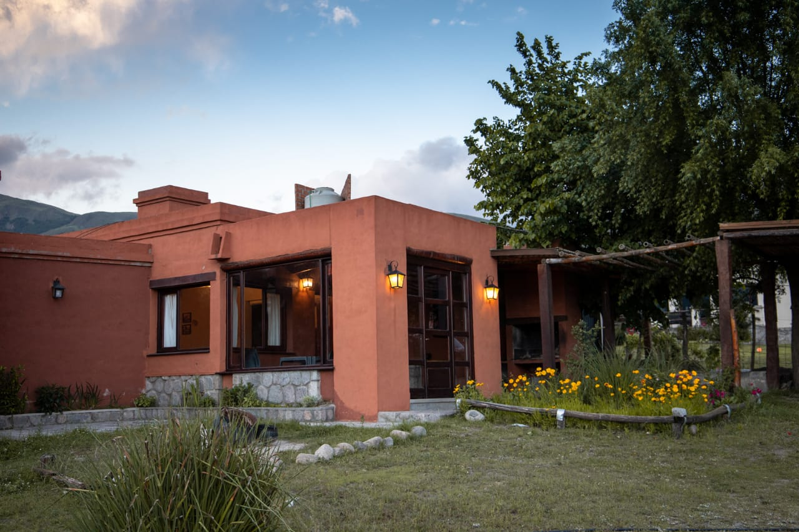

Moxy Cabañas
El Grupo Mox es una empresa familiar con amplia experiencia en turismo.
A medida que sus integrantes se convirtieron en profesionales arquitectos y decoradores, el
Grupo
Mox
fue
adquiriendo conocimiento y experiencia en otras áreas hasta el momento no exploradas y con el
mismo
espíritu
de integración y crecimiento que los caracterizó desde un principio, se creó la cadena Moxy
Cabañas,
cuya
filosofía conjuga experiencia, profesionalismo y vocación de servicio.
Cabañas Moxy cuenta con alojamiento, cada una con capacidad para 6 personas. La
disposición de las cabañas preserva vistas privilegiadas desde todos los puntos y propone la
privacidad
necesaria para cada huésped.
El complejo cuenta con piscina, juegos para niños y espacios comunes para el entretenimiento. La
seguridad, dispuesta como servicio diferencial, promete una estadía sin inconvenientes.
Familiar, privado, seguro. Destacado como un alojamiento reconocido en la zona,
sostiene, a través de los años, la capacidad de asistir a los turistas con un servicio
direccionado
a
cada necesidad y expectativa.
